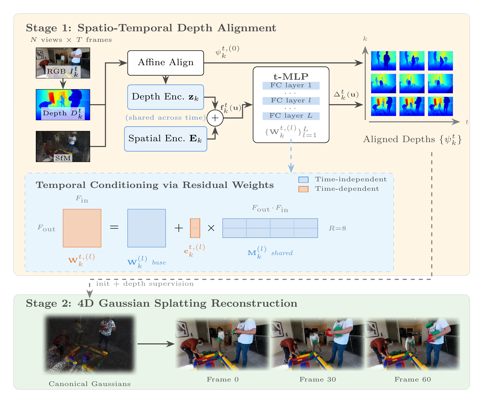
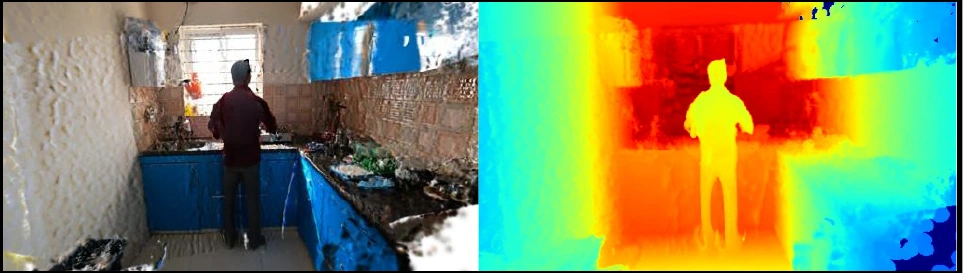
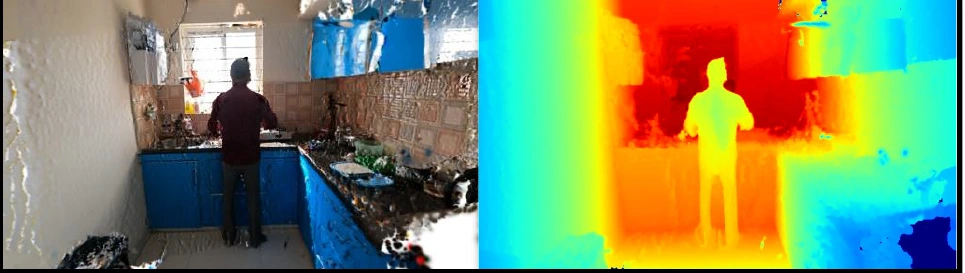
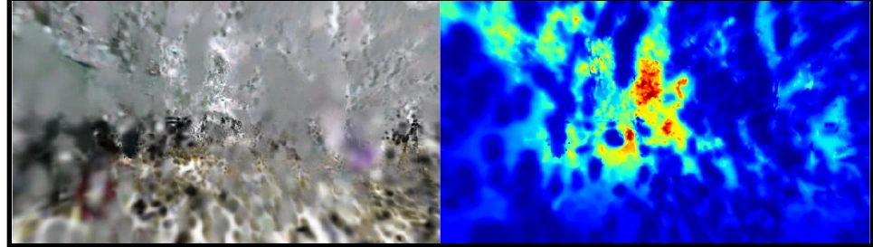
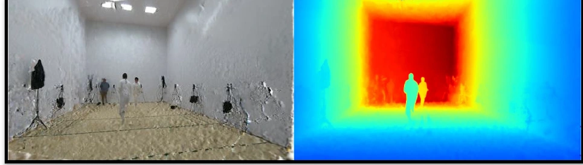
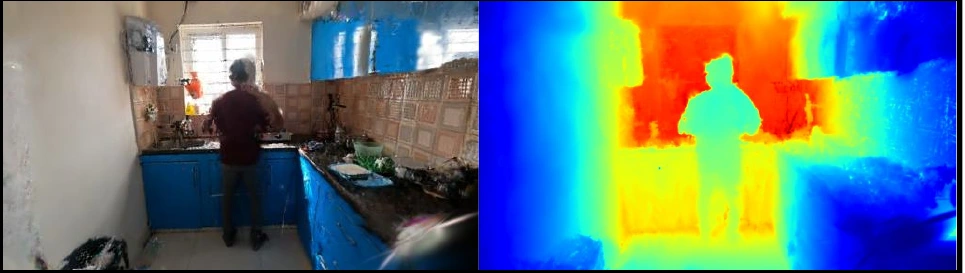
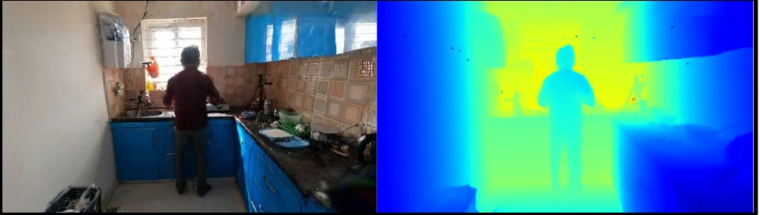
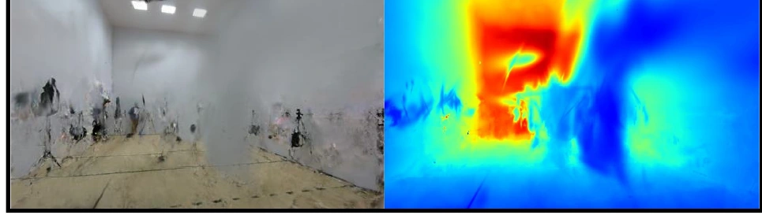
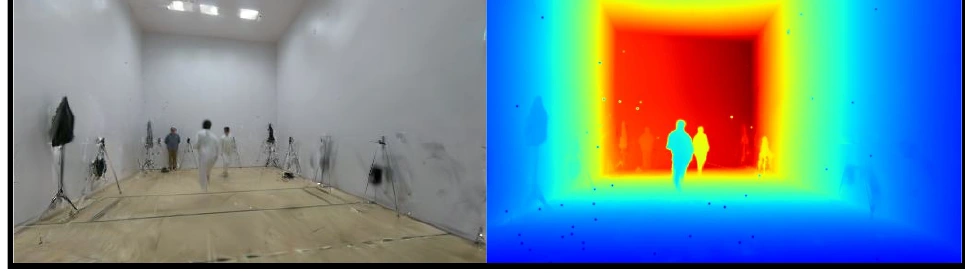

Novel-time synthesis
Fencing · Left: RGB, right: depth · Top: baseline, bottom: + UniFusion.
We address sparse-view 4D reconstruction, where limited cross-view overlap and temporal variation make monocular depth predictions inconsistent across both views and time. Existing methods align these dimensions in separate stages and depend on foreground masks and tracking models.
UniFusion introduces a unified spatio-temporal depth alignment framework that represents all depth maps as spatio-temporal neural fields. It jointly resolves cross-view and cross-time inconsistencies without distinguishing foreground from background. A multi-view depth-order loss and a scale-and-shift-invariant loss further improve depth quality.
The aligned depths initialize and supervise Gaussian splatting models. Experiments on Ego-Exo4D and EgoHuman show consistent improvements in novel-view / time synthesis and geometry, including PSNR gains of 4–6 dB and absolute relative depth-error reductions of 14–40%.
All temporal frames from one view share the same spatial representation, while compact residual weights condition the alignment network on time-dependent variation. The aligned depths then provide geometric initialization and supervision for 4D Gaussian splatting.

Per-view encodings capture geometry shared across all frames.
Low-rank residuals efficiently model time-dependent depth variation.
Multi-view ordering and scale-shift invariance refine aligned depth.
UniFusion consistently improves two Gaussian-splatting backends across novel-time and novel-view synthesis. Select a backend to browse the corresponding video comparisons.
Fencing · Left: RGB, right: depth · Top: baseline, bottom: + UniFusion.
Lego · Left: RGB, right: depth · Top: baseline, bottom: + UniFusion.
Cooking · Left: RGB, right: depth · Top: baseline, bottom: + UniFusion.
Fencing · Left: RGB, right: depth · Top: baseline, bottom: + UniFusion.
Music · Left: RGB, right: depth · Top: baseline, bottom: + UniFusion.
Music · Left: RGB, right: depth · Top: baseline, bottom: + UniFusion.
Drag the divider to compare each backend with its UniFusion-enhanced result. Use the arrows or swipe to browse scenes.








@article{lyu2026unifusion,
author = {Lyu, Yongzhe and Wang, Shaofei and Chen, Yixin and Huang, Siyuan},
title = {UniFusion: Sparse-View 4D Reconstruction via Unified Spatio-temporal Depth Alignment},
year = {2026}
}